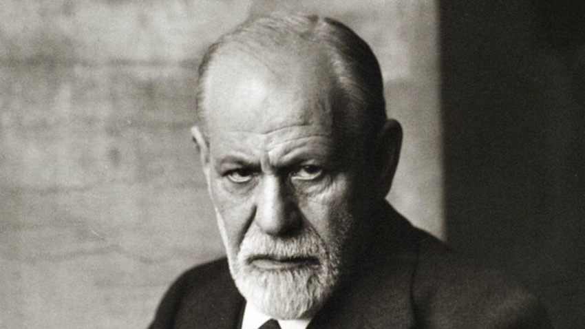

The Interpretation of Dreams
梦的解析(德语：Die Traumdeutung)
弗洛伊德首先回顾了此前关于分析梦的科学著作，他认为虽然有趣但是不够充分。然后他记述了许多梦，来阐明他的理论。他的方法开始于分析他的梦“伊尔玛打针”，但也有许多来自病人的个案研究，书中引用的许多最重要的梦都来自他人。弗洛伊德进行分析的许多来源来自文学作品，该书更多的是一次文学分析的自觉尝试，超过心理学研究的成分。弗洛伊德在此首次讨论了后来发展的恋母情结理论，也就是俄狄浦斯情结。书中作者声称他发现了三大真理：梦是无意识欲望和儿时欲望的伪装的满足；俄狄浦斯情结是人类普通的心理情绪；儿童是有性爱意识和动机的。
作品评价
“改变历史的书”、“划时代的不朽巨著”之一，这是一部与达尔文的《物种起源论》及哥白尼的《天体运行论》并列为导致人类三大思想革命的书。
——美国唐斯博士
《梦的解析》堪称一部划时代的著作，而且很可能是迄今在经验主义基础上掌握无意识心灵之谜的最勇敢尝试。
——瑞士心理学家荣格
“20世纪最惊人、最狂妄的智力骗局”
——英国诺贝尔奖获得者梅多。
作者
西格蒙德·弗洛伊德 （德语：Sigmund Freud，出生名：Sigismund Schlomo Freud，1856年5月6日－1939年9月23日），奥地利心理学家、精神分析学家、哲学家，精神分析学的创始人，二十世纪最有影响力的思想家之一。 他生于奥地利弗莱堡（今属捷克）的一个犹太家庭，从维也纳大学毕业后一直在维也纳工作，后因躲避纳粹，迁居英国伦敦。 他著有《梦的解析》、《性学三论》、《图腾与禁忌》等，提出了“潜意识”、“自我”、“本我”、“超我”、“俄狄浦斯情结”、“欲力”、“心理防卫机制”等概念，被世人誉为“精神分析之父”。
作者经历
他曾经说过：人类有史以来曾经受过三次重大耻辱，一次是波兰天文学家尼古拉·哥白尼的日心说，将人类从主宰宇宙的神坛上拉了下来；第二次是英国生物学家查尔斯·罗伯特·达尔文的进化论，将人类主宰地球的神坛上拉了下来；第三次就是精神分析理论，将人类从自我主宰的神坛上拉了下来。
可见，是弗洛伊德让人类遭受了第三次重大的耻辱。美国《纽约时报》评价说：弗洛伊德不断提出未来心理分析可以洞察的人类兴趣的其他一些领域，而证明心理分析是理解和引导人类各种形式的艰苦努力的一种方法。弗洛伊德意识到心理分析仍是一种尚未得到充分发展的科学和方法，不管目前取得怎样的成就，现在都仅仅是个开始而已。

梦
梦的根源分为四种，他们也被用于划分梦：1、外部（客观）感官刺激，如雷声滚滚、雄鸡打鸣、被子掉落、被拍打、闻到香味等等；
2、内部（主观）感官刺激，如入睡前的幻觉、对话语、名字等的幻听等；
3、内部（器官）躯体刺激，如肌肉的感觉、呼吸的感觉、胃的感觉、性感觉、末梢的感觉等；
4、心理刺激源，如日间所从事之事、醒着时感兴趣之事等。
The most important moment in life is always the next moment